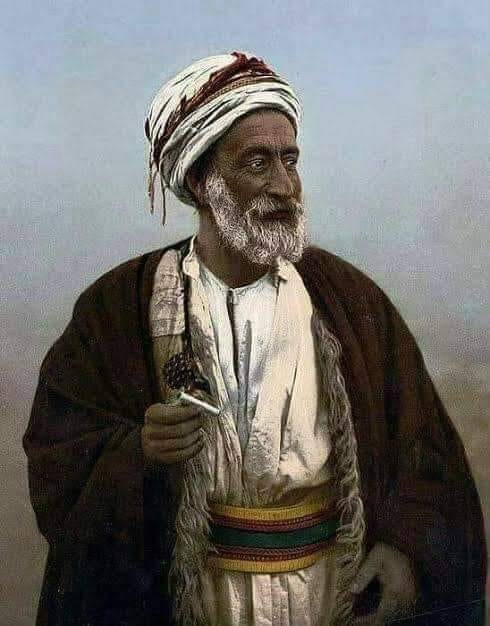

Usman da Folio funda la cuidad de Sokoto y la establece como capital del Califato de Sokoto, proclamándose como Califa en 1812. Tras años de expansión, el califato se expande hasta Futa Yallon y los estados senegaleses de Jolof. Sin embargo, debido a una falta de administración y clara noción de quien debía ser el sucesor tras la muerte del califa en 1817. Sokoto entra en guerra civil y el califato se desintegra en 1837.
